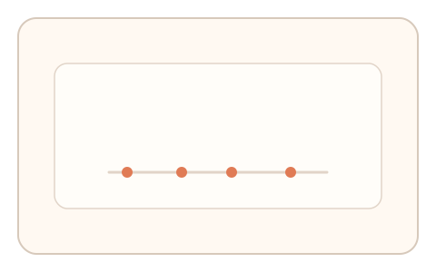
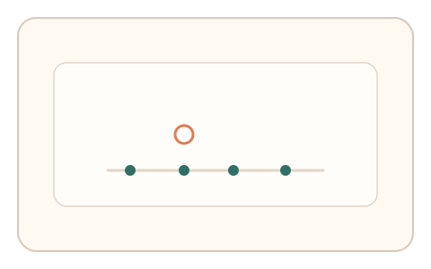

#175
Reverse Brainstorming - Round 4
已扩展
事件时序水印
在事件间隔中嵌入微小水印，验证响应序列与水印时序的一致性。
概念原文
在输入事件序列中嵌入微小、不可感知的时序水印（事件间隔微扰），并验证用户响应是否与水印时序一致。
回放无法复刻动态水印，延迟回放易暴露。
研究背景
时序水印可隐藏在微小间隔扰动中，真实用户响应会自然跟随，而回放或脚本难以复刻动态水印序列。
核心机制
- 生成带水印的时间间隔序列。
- 用户进行输入操作形成响应序列。
- 计算响应与水印序列的相关性。
- 基于相关度与时序偏差判定。
用户流程
- 步骤 1：系统发出带水印的节奏提示。
- 步骤 2：用户进行输入响应。
- 步骤 3：系统对比水印相关性并判定。
判定信号
水印相关系数
真实响应应与水印序列存在相关。
时序偏移分布
人类会出现稳定偏移而非完全对齐。
判定逻辑
相关度需落在合理区间且偏移分布自然；零相关或过度对齐判异常。
对抗面
- 脚本读取水印并同步触发
- 回放历史响应序列
防御与缓解
- 会话级随机化水印序列
- 叠加轻噪声与多段水印
- 缩短响应窗口
可达性与风险
保持水印幅度在感知阈下并提供慢速模式。
- 低分辨率计时影响水印检测
- 浏览器节流导致时序偏差
可视化状态

状态 1：水印节奏
间隔中嵌入微扰水印。

状态 2：响应序列
用户响应形成时序序列。

状态 3：相关判定
比较水印相关度。
参考资料
Digital watermarking
说明水印与隐蔽序列。
Jitter
说明时序微扰与抖动。